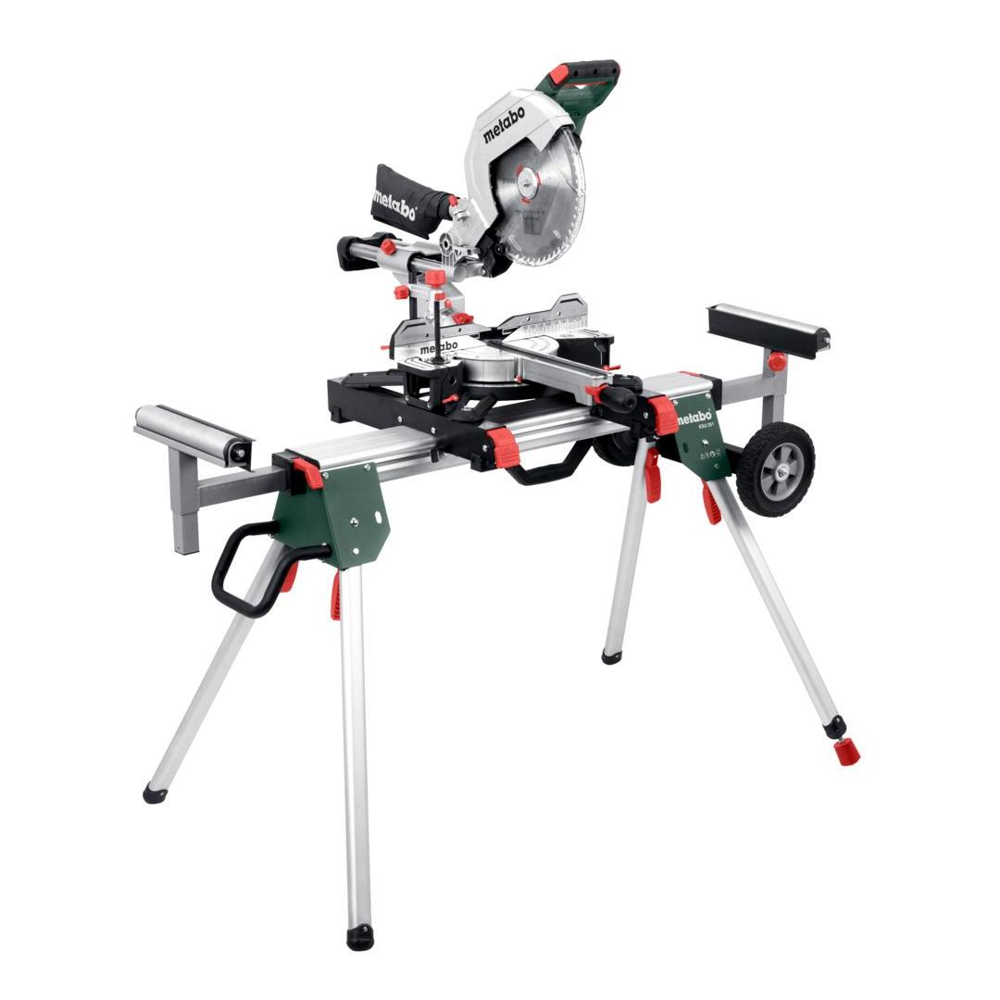
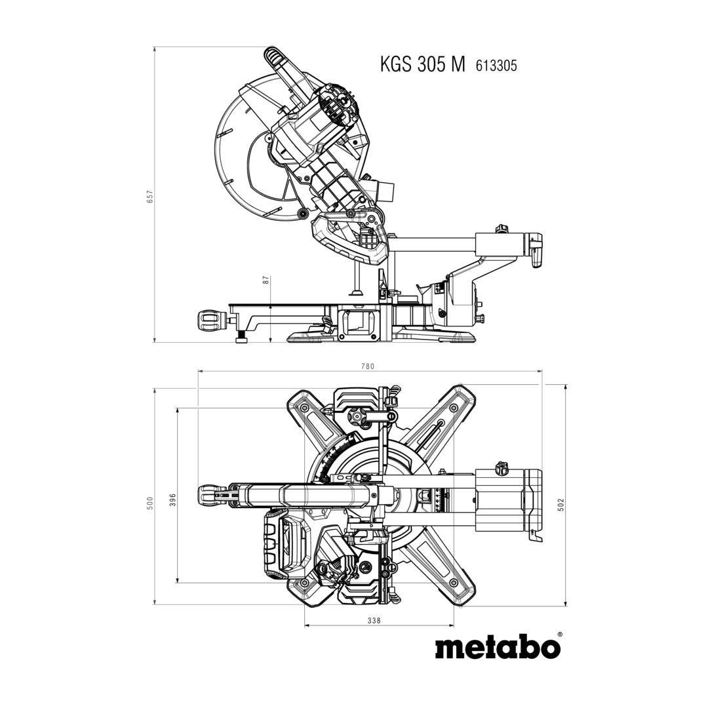
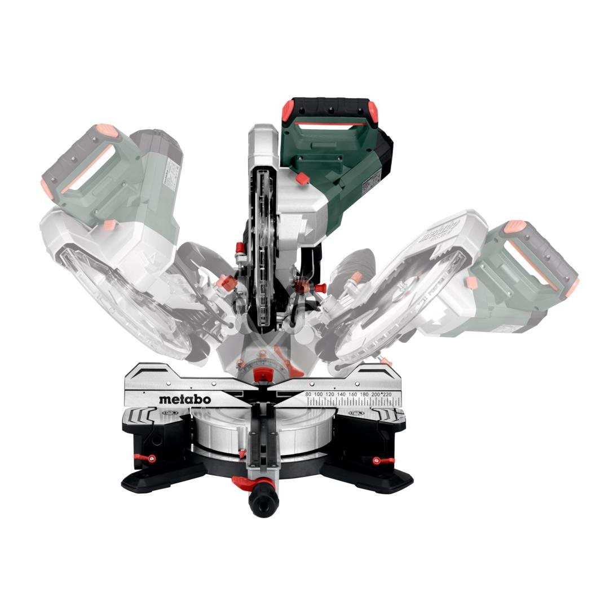
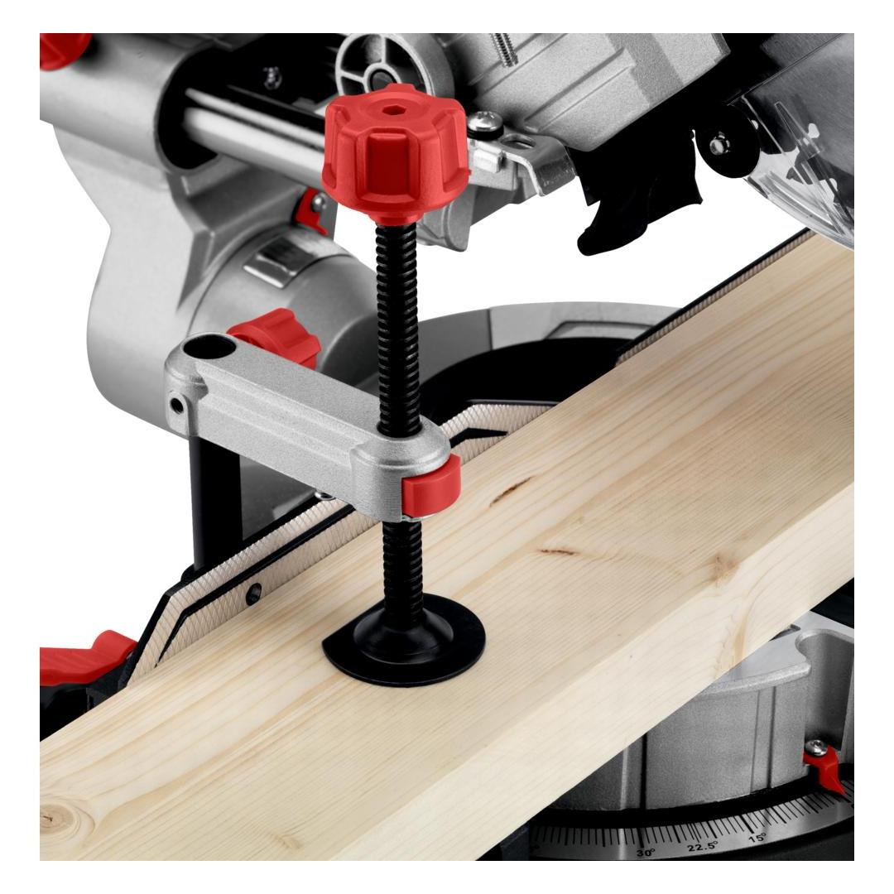
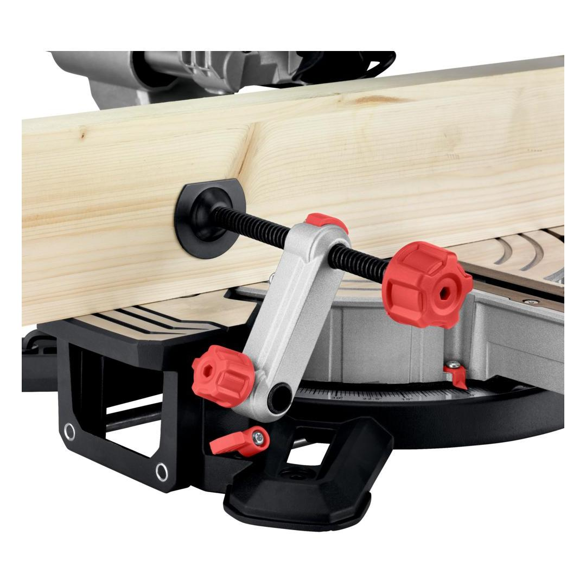
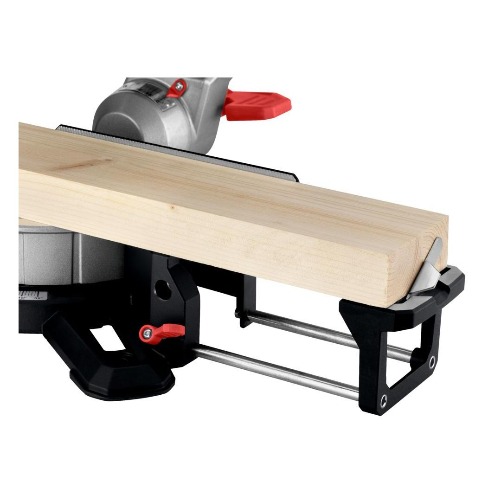
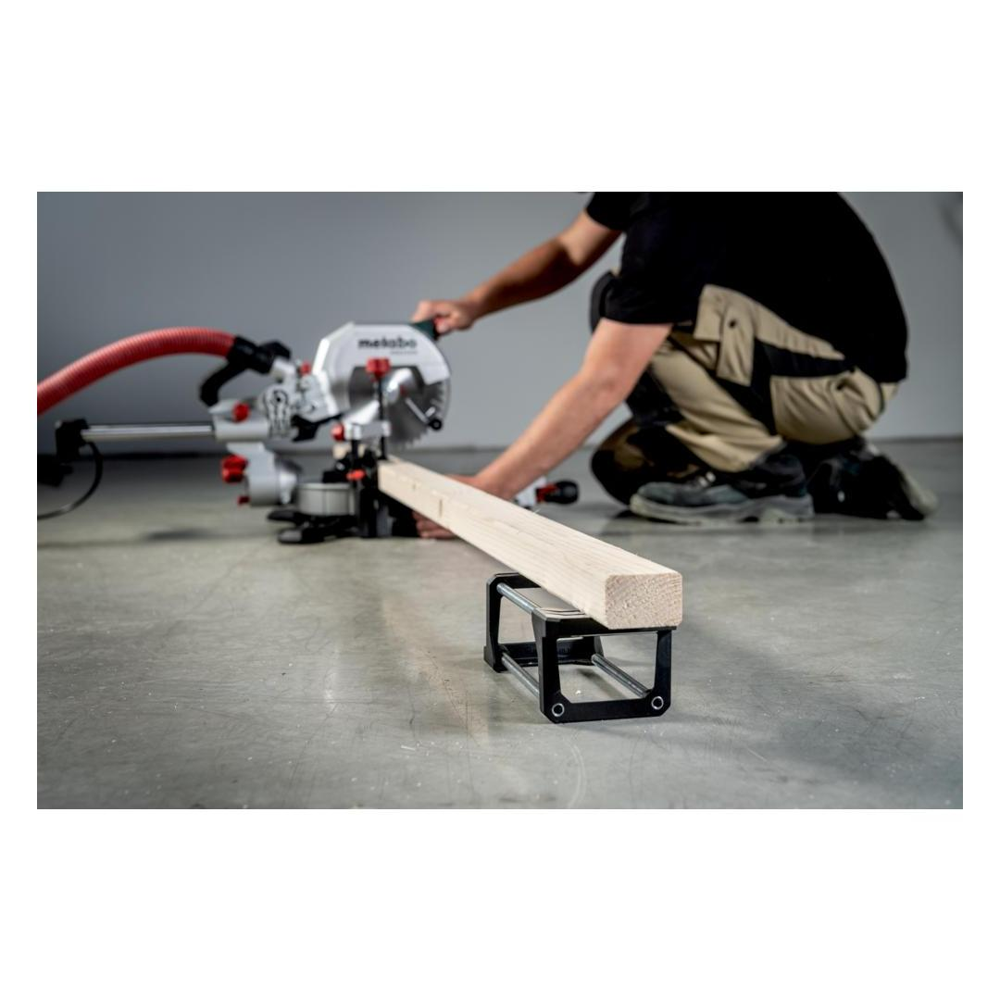
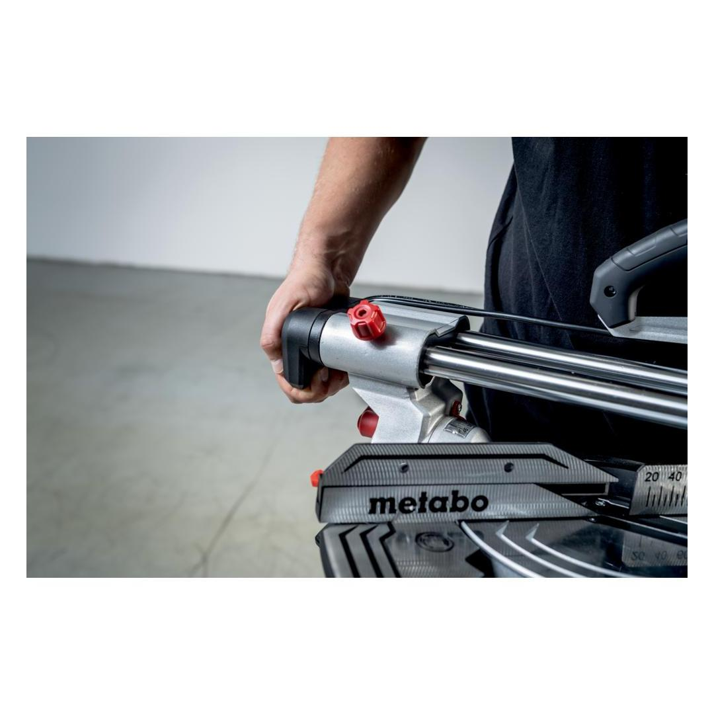
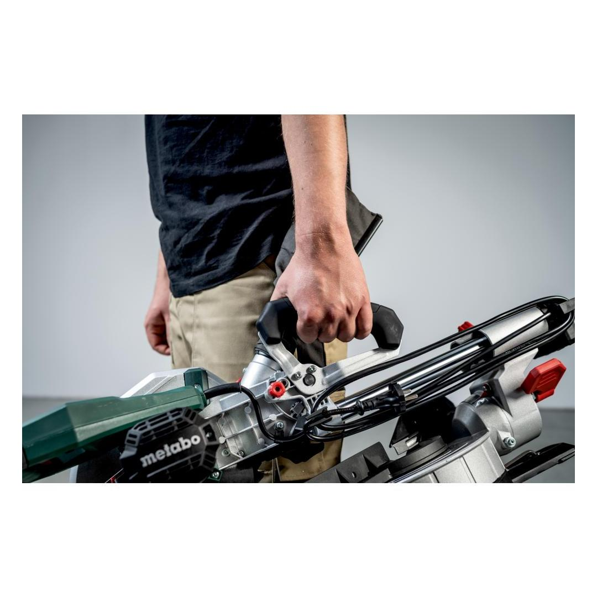
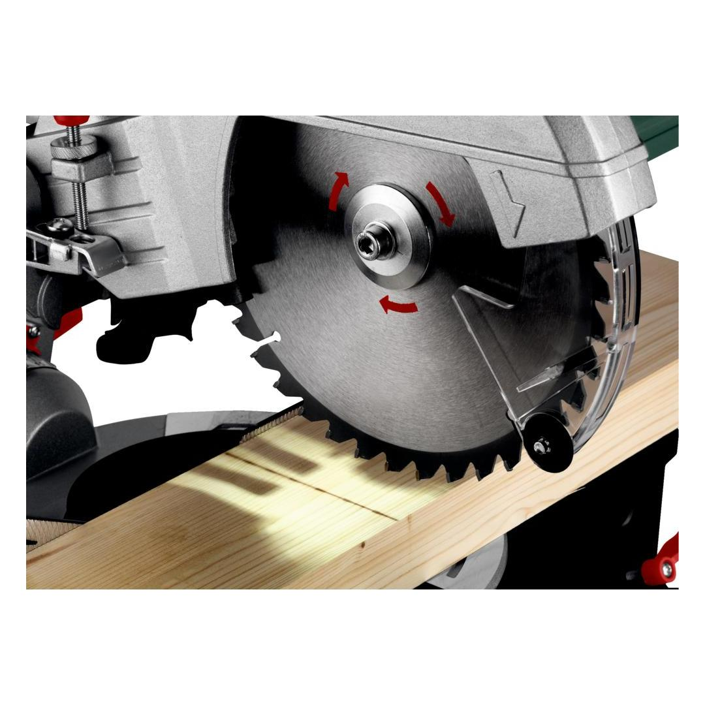

691215000











| Maximum cutting width 90°/45° | 305 / 215 mm // 12 / 8 1/2 " |
| Maximum cutting depth at 90°/45° | 110 / 67 mm // 4.33 / 2 5/8 " |
| Rated input power S1 100% | 1600 W |
| Rated input power S6 20% | 2000 W |
precise shadow cutting line without re-adjustment thanks to cleverly positioned LED
Electronic soft startfor smooth start-up
Fast Breakfast brake for increased safety with fast stopping of the tool used.
Optimal dust protectionfor clean, comfortable working: dust and chips are extracted immediately and efficiently
| Dimensions | 780 x 500 x 657 mm // 30.7 x 19.68 x 25.86 " |
| Support surface | 345 x 770 |
| Maximum cutting width 90°/45° | 305 / 215 mm // 12 / 8 1/2 " |
| Maximum cutting depth at 90°/45° | 110 / 67 mm // 4.33 / 2 5/8 " |
| Cutting capacity 90°/90° | 305 x 110 mm // 12 x 4 1/8 " |
| Cutting capacity 45°/45° | 215 x 67 mm // 8 1/2 x 2 5/8 " |
| Turntable setting left/right | 50 / 60 ° |
| Saw blade tilt left/right | 47 / 47 ° |
| Saw blade | 305 x 30 mm // 12 x 1.181 " |
| Rated input power S1 100% | 1600 W |
| Rated input power S6 20% | 2000 W |
| No-load speed | 3700 rpm |
| Speed at rated load | 3000 rpm |
| Cutting speed | 59 |
| Weight | 18.6 |
| Cable length | 2 m / 7 ft |
| Sound pressure level | 87 dB(A) |
| Sound power level (LwA) | 100 dB(A) |
| Uncertainty of measurement K | 3 dB(A) |
| Saw blade "precision cut wood - classic", 305x30 Z56 |
| 2 Table length extensions |
| Length Guide |
| Material clamp |
| Tool for saw blade change |
| Cable winder |
| Chip Collection Bag |
| Machine stand KSU 251 |